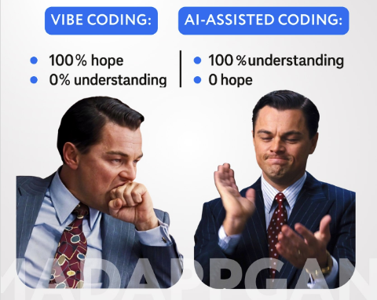
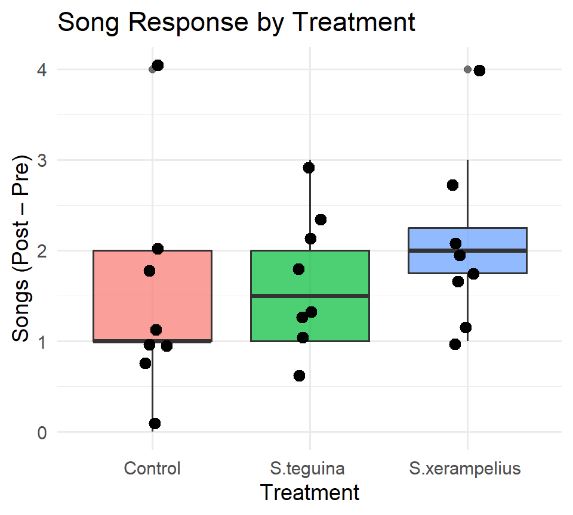

University of Puerto Rico
Thursday, December 4, 2025
Vibe coding is prompting an AI system to generate code based on natural language descriptions, saving you from writing it all from scratch.
La codificación Vibe implica que un sistema de IA genere código basado en descripciones en lenguaje natural, lo que le ahorra tener que escribirlo todo desde cero.
Vibe coding, a term coined by Andrej Karpathy in February 2025, describes an increasingly popular approach to writing software: express the code you want in a few sentences to an AI system like ChatGPT or Claude, then polish and (hopefully!) test the generated result.
Vibe coding, un término acuñado por Andrej Karpathy en febrero de 2025, describe un enfoque cada vez más popular para escribir software: expresar el código que desea en unas pocas oraciones a un sistema de IA como ChatGPT o Claude, luego pulir y (¡con suerte!) probar el resultado generado.
“… is the current phenomenon where someone, sometimes with zero programming experience, asks AI for a professional, complete solution, copies and pastes prompts, and keeps iterating without ever defining the internal logic until, miraculously, everything works.” 1
… es el fenómeno actual en el que alguien, a veces sin experiencia en programación, le pide a una IA una solución profesional y completa, copia y pega indicaciones y sigue iterando sin definir nunca la lógica interna hasta que, milagrosamente, todo funciona.
The “product” is done. Did they understand how it works? Do they know why that line exists, or why that algorithm was used?1
El producto está listo. ¿Entendieron cómo funciona? ¿Saben por qué existe esa línea o por qué se usó ese algoritmo?
Co-founder of openAI says of vibe coding: “It’s not really coding – I just see things, say things, run things, and copy-paste things, and it mostly works.”.1
El cofundador de openAI dice sobre la codificación vibratoria: “En realidad no es codificación: solo veo cosas, digo cosas, ejecuto cosas y copio y pego cosas, y en general funciona”.

Using AI as a code assistant is not the same as what is now commonly called “vibe coding.” These are radically different ways of building solutions, and the difference matters a lot, especially when we talk about scalable and maintainable products in the long term.
Usar la IA como asistente de código no es lo mismo que lo que ahora se conoce comúnmente como “Vibe Coding”. Son formas radicalmente diferentes de crear soluciones, y la diferencia es fundamental, especialmente cuando hablamos de productos escalables y sostenibles a largo plazo.
You need to know how to code.
Necesitas saber codificar.
It is not about handing everything over to the machine, but about leveraging AI to structure your ideas, polish your code, detect optimization opportunities, implement best practices, and, above all, understand what you are building and why. You are steering the conversation, setting the goal, designing algorithms so they are efficient, and making architectural decisions.1
No se trata de dejar todo en manos de la máquina, sino de aprovechar la IA para estructurar tus ideas, pulir tu código, detectar oportunidades de optimización, implementar las mejores prácticas y, sobre todo, comprender qué estás construyendo y por qué. Estás dirigiendo la conversación, estableciendo el objetivo, diseñando algoritmos eficientes y tomando decisiones arquitectónicas.
You use AI as a tool to implement each part faster and in a more robust way.
Utiliza la IA como herramienta para implementar cada parte de forma más rápida y robusta.
Remember that the commercial agents, like Claude code or github copilot, are designed for software engineers. So they write robust R code, but they are also not very good at statistics.1
Recuerda que los agentes comerciales, como Claude Code o GitHub Copilot, están diseñados para ingenieros de software. Por lo tanto, escriben código R robusto, pero tampoco son muy buenos en estadística
“Robust code” usually means code that keeps working correctly even when conditions aren’t ideal. In other words, it doesn’t break easily, it handles unexpected inputs gracefully, and it avoids hidden assumptions that cause errors later.
El término “código robusto” generalmente se refiere a código que sigue funcionando correctamente incluso cuando las condiciones no son ideales. En otras palabras, no se rompe fácilmente, maneja entradas inesperadas de manera adecuada y evita asumir cosas ocultas que puedan causar errores más adelante.
df$value has NA values → returns NA (silent failure).df$value tiene valores NA → devuelve NA sin advertir el problema.Checks that the column exists.
Verifica que la columna exista.
Handles NA values safely.
Maneja valores NA de forma segura.
Non-robust code can hide problems in your data. When the code silently returns NA or assumes everything is correct, you may base your scientific conclusions on mistakes you never noticed. Robust code makes those problems visible early, so your analysis is more reliable and reproducible.
El código no robusto puede ocultar problemas en tus datos. Cuando el código devuelve NA sin avisar o asume que todo está bien, puedes basar tus conclusiones científicas en errores que nunca viste. El código robusto hace que esos problemas aparezcan desde el inicio, haciendo tu análisis más confiable y reproducible.
Given the promise and peril of vibe coding, it is imperative to approach it with a framework of caution and responsibility. Here are several recommendations to guide ethical development:
Dadas las promesas y los riesgos de la codificación de vibraciones, es imperativo abordarla con cautela y responsabilidad. A continuación, se presentan varias recomendaciones para guiar el desarrollo ético:
